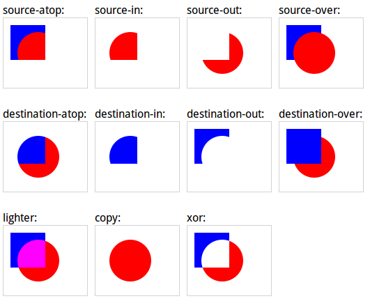

Canvas介紹
Canvas函式
HTML的canvas元素
由蘋果公司首先推出
可以在畫布上渲染圖形
連IE9都有支援
蘋果公司要給OS X的Dashboard和Safari用的
後變為HTML5的規格之一
舊版的IE可以用Google的Explorer Canvas函式庫
只有width和height
沒有src和alt
預設寬300px高150px
為了避免不支援canvas
使用成對的canvas並在之中夾入內容
IE6 RIP
也可以用CSS改變尺寸
但是CSS可能造成圖片扭曲
使用本身的width和height進行尺寸調整
rendering context
元素本身不能畫圖
要用getContext()取得該環境
繪圖種類有2D,webgl,webgl2
不只2D還可以畫3D
alhpa可以設定該元素是否透明
webgl選項不在此討論...
在DOM完成載入前canvas繪圖沒有作用
將繪圖的函式在onload時觸發認同請分享
儘量這樣做否則不保證可以運作
和數學的笛卡兒座標軸略有不同
右方為X軸正向
下方為Y軸正向
下方為Y軸正向
下方為Y軸正向
很重要所以說三次
光簡單介紹canvas大家不會用
還要講解相關函式才行
此canvas是狀態機
改變狀態後其行為也會改變
顏色和圖形繪製是分開設定的
fillStyle屬性
可以指定以下樣式：
顏色字串
漸層物件
式樣物件
strokeStyle屬性
一樣可以指定以下樣式：
顏色字串
漸層物件
式樣物件
shadowColor屬性設定顏色字串
shadowBlur屬性設定模糊數值
shadowOffsetX屬性設定X軸偏移數值
shadowOffsetY屬性設定Y軸偏移數值
createPattern(img,style)
img可為image,canvas或video元素
style可為以下字串：
repeat,repeat-x,repeat-y,no-repeat
畫布中的圖像不能用路徑直接當圖
要從img抓出物件或另外建立Image物件
先用Image建構子傳入x,y
再來用src屬性指定圖片路徑就完成了
createLinearGradientc(x0,y0,x1,y1)
產生以(x0,y0)到(x1,y1)的漸層
createRadialGradient(x0,y0,r0,r1,y1,r1)
從(x0,y0)半徑r0之圓周漸層至(x1,y1)半徑r1之圓周
addColorStop(stop,color)
使用該函式對漸層物件指定關鍵點顏色
stop值為0.0~1.0之間的浮點代表位置
color僅能為顏色字串
lineCap屬性設定樣式字串
butt增加平坦邊緣 為預設值
round增加圓弧形的結尾
square增加方形的結尾
lineJoin設定樣式字串
bevel為斜角轉折
round為弧形轉折
miter為尖銳轉折 預設值
lineWidth設定寬度數值
應該不用說明了吧...
miterLimit設定尖銳轉折點的長度
只有在轉折為miter時可作用
若長度超過限制則看起來是bevel轉折
rect(x,y,w,h)產生矩形
可先設定其相關樣式
此函式不會將矩形畫出來
搭配stroke()或fill()使用
fillRect(x,y,w,h)畫出填滿的矩形
記得搭配fillStyle設定樣式
strokeRect(x,y,w,h)僅畫出矩形的外框
記得搭配strokeStyle設定樣式
clearRect(x,y,w,h)可以清除制定範圍的像素
指定範圍的橡皮擦
Canvas中存在著路徑的狀態
改變其狀態可獲得不同結果
fill()將目前的路徑包起來填滿
路徑沒有包起來則將終點起點自動連線
剛才的rect()其實也只是製造路徑
記得搭配fillStyle設定樣式
stroke()把目前的路徑畫出來
可搭配其他路徑移動的函式將路徑定義
記得搭配strokeStyle設定樣式
beginPath()產生新路徑
將目前路徑清除重新開始
closePath()將頭尾相連
這樣就不用記住起點是哪裡了
moveTo(x,y)將路徑移動至(x,y)但不畫線
只有改變目前路徑的位置
lineTo(x,y)就是畫線並移動到(x,y)
會改變目前路徑的位置
但是不能用來發訊息給別人
quadraticCurveTo(cpx,cpy,x,y)畫二次曲線並移動至(x,y)
就是拋物線啦~~
(cpx,cpy)為其控制點
bezierCurveTo(cpx1,cpy1,cpx2,cpy2,x,y)
用2個控制點來畫貝茲曲線
不要問 你會怕
arc(x,y,r,sA,eA,counterclockwise)
以(x,y)為圓心從角度sA到角度eA畫出半徑r的弧形
角度計算是用Math::PI來計算
單純畫圓弧就好不要用來做路徑的移動
arcTo(x1,y1,x2,y2,r)畫弧線並移動到(x2,y2)
(x1,y1)為切線的交界
此函式就會移動路徑了
IsPointInPath(x,y)可偵測該點是否再路徑上
我也不知道有啥用處...
clip()將路徑外的區域設定為不可繪圖
使用save()和restore()儲存或回復canvas的狀態
font屬性可設定字體樣式字串
原理和CSS的字體樣式一樣
textAlign屬性設定對齊字串
start,left
center
end,right
textBaseline屬性設定文自己基準字串
alphabetic,ideographic
top,hanging
middle
bottom
fillText(text,x,y,maxWidth)
可以先設定文字樣式或填滿樣式
最大寬度可以設定讓全都擠在裏面
strokeText(text,x,y,maxwidth)
參數和fillText一樣
僅有文字外框而不填滿
measureText(text)可測量指定字串的寬度
不同字體下寬度有可能不同
函式就一個...
drawImage(img,x,y)
drawImage(img,x,y,w,h)
drawImage(img,sx,sy,sw,sh,x,y,width,height)
可以全畫出來或只畫部份圖片
width屬性可取得寬度
height屬性可取得高度
data屬性可取得像RGBA位元陣列
createImageData(w,h)產生RGBA陣列
可以再放回canvas
getImageData(x,y,w,h)取得RGBA陣列複本
putImageData(data,x,y)將數據當圖畫回canvas
實際上還可以指定只畫數據內部的x,y,w,h
transform很難翻啊~~
scale(w,h)設定長寬的縮放比例
路徑也會受到縮放的影響
rotate(angle)旋轉指定的弳度量
路徑會受到旋轉影響
translate(x,y)將原點位移至(x,y)
因為是狀態所以持續有效...
transform(a,b,c,d,e,f)累加變形效果
a,d為水平和垂直縮放量
b,c為水平和垂直的歪曲
e,f為水平和垂直的位移
其實這是個矩陣...
setTransform(a,b,c,d,e,f)直接設定變形矩陣
參數效果相同但直接設定矩陣值
沒有累加的效果
globalAlpha屬性設定0~1的透明度
讓繪圖有半透明的效果
globalCompositeOperation屬性
讓圖片疊加時顯示不同合成效果

今天的JS課程到這邊結束